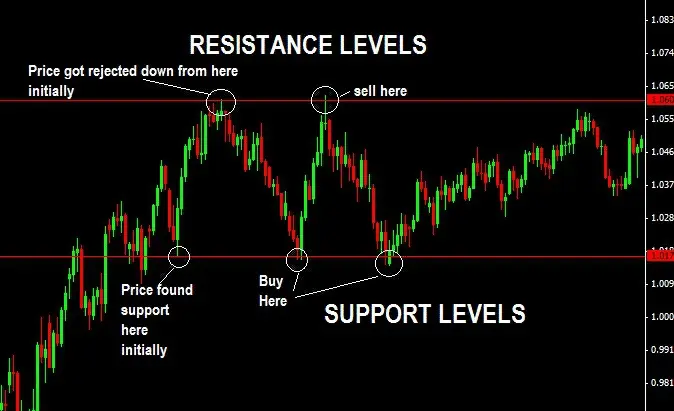
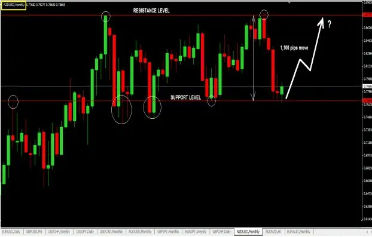
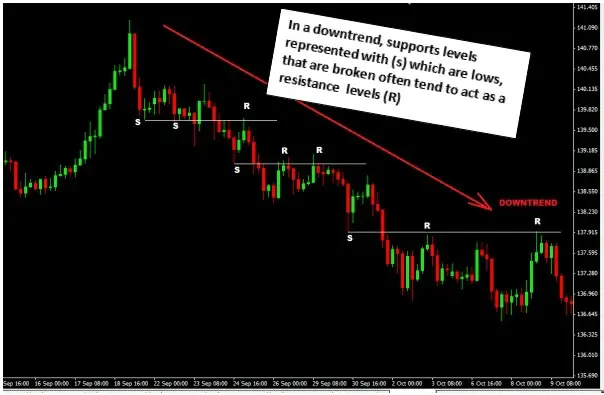
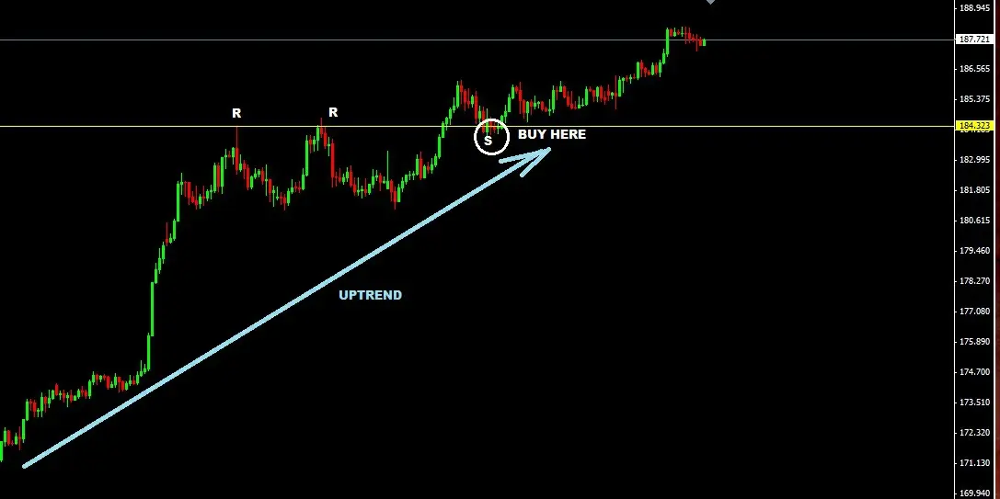

Trading Support and Resistance Level
Support and resistance levels stand out the most on any chart. These levels are obvious to everyone as they are so
plain to see. In actuality, the basis of price action trading is support and resistance trading.
The secret to profitable price action trading is to identifying useful levels of support and resistance on your charts.
I will discuss three different sorts of support and resistance levels, which are as follows:
1. The common horizontal support and resistance levels with which you are most likely acquainted.
2. Breaking resistance levels into support levels and breaking support levels into resistance levels.
3. Dynamic Levels of Support and Resistance.
Let's Now Examine Each In Great Depth.
● Levels of Horizontal Support and Resistance
These may be seen on your charts very easily. They resemble peaks and valleys. The sample chart below
demonstrates how to trade them.

Fining Horizontal Support and Resistance Level On The Chart
● A support level is a price level that the price hits after
declining for some time and then rising from.
● A resistance level is reached when a price increases to the point where it can no longer move higher and then
reverses.
Consequently, you should anticipate that the price will be rejected from that level once more when it returns to that
support or resistance level. In these circumstances, using reverse candlestick trading on support and resistance levels
is quite helpful.
Significant Levels of Support & Resistance
There are various types of support and resistance levels. Focus on finding important support and resistance levels on
your charts if you're serious about entering trades with a high chance of success.
Large timeframes like the monthly, weekly, and daily charts are where significant support and resistance levels are
generated.
Additionally, price movements in response to these levels typically last a very long time.
Here is an illustration of the NZDUSD currency pair hitting a resistance level on the monthly period and moving
1,100 pips lower to the subsequent important support level, where the price is currently seen rebounding:

Here is the method I employ to trade setups that occur across longer time frames:
I lower my timeframe to the 4hour, 1hour, 30minutes, 15minutes, or even 5minutes as I wait for a reversal
candlestick signal to enter a trade. I'm doing this to shorten my stop loss distance and enter at a much higher price
level. Multi-timeframe trading revolves around this.
Resistance Level Changed Into Support Level, And Vice Versa
Next up is a concept known as Support turned Resistance Level and Resistance turned Support Level.
Many traders are unaware that a support level that has been broken to the downside during a decline frequently acts
as a resistance level. Here's an illustration from the chart below:

Therefore, if this occurs, you should search for a bearish reversal candlestick to enter a short position. In actuality,
these "R's" are upswings within a downtrend.
Similar events occur when price breaks through resistance levels in an uptrend; when price descends to these levels,
they now serve as support levels.
Here's an illustration:

As a tip to buy, watch for bullish reversal candles around these types of resistance turned support levels.
Can you see how using other indicators becomes less necessary once you realize how simple it is to identify trading
setups like these?